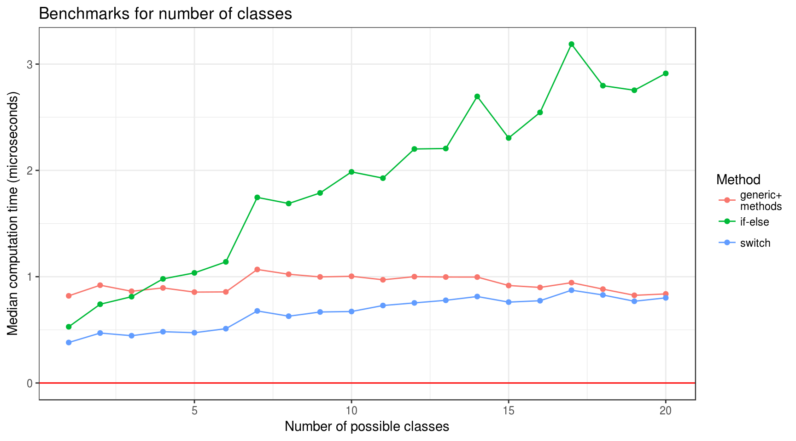
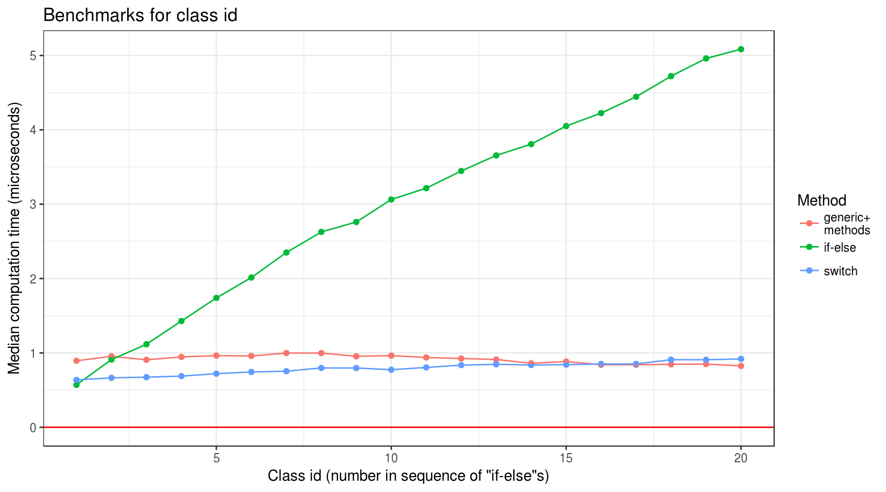

Mythical Generic Overhead
Prologue
Earlier this week I came across this tweet from Thomas (author of many useful and powerful R packages). “Generic+methods” approach is considered better for many reasons, which can be summarised as “easier code maintenance, extensibility and understandability”. Hadley’s ruthless answer confirms this.
However, I was curious about looking for possible pros of “if-else” approach. The most legitimate point (in some circumstances) I was able to produce was “… method dispatch can be slower on microseconds level. But it rarely has any practical impacts”. This thought inspired me to make some analysis of possible computational overhead of using “generic+methods” approach over “if-else” and “switch” (which seems just a slight enhancement of “if-else”).
Note that, regardless of this analysis outcome, using S3 methods is better choice over “if-else” sequence and “switch” statement in almost all practical cases.
Overview
Brainstorm about possible nature of performance led to the following experimental design features:
- Evaluation should be done for different number of possible classes.
- Evaluation should be done for different classes inside “if-else” chain, to account for its sequential nature.
- Action performed by every function should be the same for all three considered methods.
Experiment
- Take range of possible classes number (
n_class) as1:20. - For every value of
n_classgenerate functions for “if-else” (if_get_true), “switch” (switch_get_true) and “generic+methods” (gen_get_true) approaches. Each of this function will take one argumentx. They will check the class ofxand performreturn(TRUE)action (regardless of class). - Measure for particular
n_class(with package microbenchmark) computation time of all possible*_get_true(x):*can beif,switchandgen.xis constructed independently from*and is a numeric value1with class equals to one ofclass1, …,class{n_class}(totaln_classpossibilities).- Argument
timesofmicrobenchmark(actual number of times to evaluate the expression) should be quite big. As preliminary tests showed, computation time differs in microseconds, and big number of actual evaluations is needed to remove the statistical noise. In this analysis it is taken as \(1000000\). - The final benchmark of computation time is median of all actual evaluation times (in microseconds).
- Totally there should be \((1 + 2 + ... + 20) \cdot 3 = 630\) measurements.
Hypotheses
- “Generic+methods” benchmark correlates with number of classes. Search of appropriate method in bigger set should take more time.
- “Generic+methods” benchmark doesn’t correlate with class value. Just a guess.
- “If-else” benchmark positively correlates with class value. The later class is in “if-else” sequence the more time it should take to get to it.
- “If-else” and “switch” benchmarks are better than “generic+methods” with small number of classes but the opposite is true with bigger ones. This is just the initial guess which led to this analysis.
Setup
suppressMessages(library(tidyverse))
suppressMessages(library(rlang))
suppressMessages(library(microbenchmark))
set.seed(1105)
ggplot2::theme_set(theme_bw())Creating Data
General approach for computing benchmarks:
- Create separate environment for every value of
n_class. - Create in every environment the set of needed functions.
- Compute benchmarks for every
n_class, class id (which is a class’s number in sequence of “if-else”s) and approach.
Function Generators
Function new_get_true_all() takes number of possible classes n_class and target environment env (by default, it is the environment from which function is called). It creates all necessary functions in env and returns it for cleaner use inside dplyr’s mutate.
# Wrapper for creating function with one argument `x` in environment `env`
new_f <- function(name, body, env) {
fun <- new_function(alist(x = ), parse_expr(body), env)
assign(x = name, value = fun, envir = env)
}
new_if_get_true <- function(n_class = 1, env = caller_env()) {
body <- paste0(
'if (class(x) == "class', seq_len(n_class), '") { return(TRUE) }',
collapse = " else "
)
new_f("if_get_true", body, env)
}
new_switch_get_true <- function(n_class = 1, env = caller_env()) {
body <- paste0(
"switch(\nclass(x),\n",
paste0("class", seq_len(n_class), " = return(TRUE)",
collapse = ",\n"),
"\n)"
)
new_f("switch_get_true", body, env)
}
new_gen_get_true <- function(n_class = 1, env = caller_env()) {
# Create generic
new_f("gen_get_true", 'UseMethod("gen_get_true")', env)
# Create methods
method_names <- paste0("gen_get_true.class", seq_len(n_class))
walk(method_names, new_f, body = "return(TRUE)", env = env)
}
new_get_true_all <- function(n_class = 1, env = caller_env()) {
new_if_get_true(n_class = n_class, env = env)
new_switch_get_true(n_class = n_class, env = env)
new_gen_get_true(n_class = n_class, env = env)
env
}For example, the result of calling new_get_true_all(n_class = 2) from console is creation of the following functions in global environment (here class1 has id 1, class2 - 2 and so on):
new_get_true_all(n_class = 2)
## <environment: R_GlobalEnv>
if_get_true
## function (x)
## if (class(x) == "class1") {
## return(TRUE)
## } else if (class(x) == "class2") {
## return(TRUE)
## }
switch_get_true
## function (x)
## switch(class(x), class1 = return(TRUE), class2 = return(TRUE))
gen_get_true
## function (x)
## UseMethod("gen_get_true")
gen_get_true.class1
## function (x)
## return(TRUE)
gen_get_true.class2
## function (x)
## return(TRUE)Benchmark
Function for creating benchmarks for one value of n_class given already created environment env with all functions needed:
bench_funs <- function(n_class = 1, env = caller_env(), times = 1000000) {
bench <- map(seq_len(n_class), function(class_id) {
assign("x", structure(1, class = paste0("class", class_id)), envir = env)
assign("times", times, envir = env)
eval(
quote(microbenchmark(
'if' = if_get_true(x),
'switch' = switch_get_true(x),
gen = gen_get_true(x),
times = times
)),
envir = env
) %>%
as_tibble() %>%
group_by(expr) %>%
# Median computation time in microseconds
summarise(time = median(time) / 1000) %>%
mutate(class_id = class_id)
}) %>%
bind_rows() %>%
rename(method = expr)
rm(list = c("x", "times"), envir = env)
bench
}Computing benchmarks:
# Takes considerable amount of time to run
overhead_bench <- tibble(n_class = 1:20) %>%
mutate(
env = rerun(n(), child_env(.GlobalEnv)),
env = map2(n_class, env, new_get_true_all),
bench = map2(n_class, env, bench_funs, times = 1000000)
) %>%
select(-env) %>%
unnest(bench) %>%
mutate(method = as.character(method)) %>%
select(n_class, class_id, method, time)The result has the following structure:
overhead_bench
## # A tibble: 630 x 4
## n_class class_id method time
## <int> <int> <chr> <dbl>
## 1 1 1 if 0.529
## 2 1 1 switch 0.381
## 3 1 1 gen 0.820
## 4 2 1 if 0.521
## 5 2 1 switch 0.396
## 6 2 1 gen 0.811
## 7 2 2 if 0.961
## 8 2 2 switch 0.544
## 9 2 2 gen 1.029
## 10 3 1 if 0.554
## # ... with 620 more rowsAnalysis
We are interested in analyzing benchmarks of class checking approaches in relation to two parameters: number of possible classes n_class and class id class_id. For benchmark we will again use the median of computation time, computed for every group defined by approach and parameter.
For analysis let’s visualize and compute correlation coefficients’ confidence interval (CI) for every approach and parameter. Based on this information we will make conclusions.
Plots
Let’s define function for plotting median computation time for every approach based on parameter param (which will be n_class and class_id).
plot_median_time <- function(tbl, param) {
param_enquo <- enquo(param)
overhead_bench %>%
mutate(
Method = case_when(
method == "gen" ~ "generic+\nmethods",
method == "if" ~ "if-else",
method == "switch" ~ "switch"
)
) %>%
group_by(Method, param = UQ(param_enquo)) %>%
summarise(median_time = median(time)) %>%
ungroup() %>%
ggplot(aes(param, median_time, group = Method, colour = Method)) +
geom_point() + geom_line() +
geom_hline(yintercept = 0, colour = "red")
}overhead_bench %>%
plot_median_time(n_class) +
labs(
title = "Benchmarks for number of classes",
x = "Number of possible classes",
y = "Median computation time (microseconds)"
)
overhead_bench %>%
plot_median_time(class_id) +
labs(
title = "Benchmarks for class id",
x = 'Class id (number in sequence of "if-else"s)',
y = "Median computation time (microseconds)"
)
Correlations
Similarly to plotting, let’s define a function for computing correlation coefficient CI for parameter benchmarks.
extract_cor_ci <- function(cor_test) {
ci <- round(cor_test$conf.int, digits = 4)
tibble(lower = ci[1], upper = ci[2])
}
compute_median_time_cor_ci <- function(tbl, param) {
param_enquo <- enquo(param)
tbl %>%
group_by(method, UQ(param_enquo)) %>%
summarise(median_time = median(time)) %>%
summarise(cor_test = list(cor.test(UQ(param_enquo), median_time,
conf.level = 0.95))) %>%
mutate(cor_ci = map(cor_test, extract_cor_ci)) %>%
select(-cor_test) %>%
unnest(cor_ci)
}compute_median_time_cor_ci(overhead_bench, n_class)
## # A tibble: 3 x 3
## method lower upper
## <chr> <dbl> <dbl>
## 1 gen -0.4407 0.4444
## 2 if 0.9264 0.9886
## 3 switch 0.8297 0.9726compute_median_time_cor_ci(overhead_bench, class_id)
## # A tibble: 3 x 3
## method lower upper
## <chr> <dbl> <dbl>
## 1 gen -0.8812 -0.4056
## 2 if 0.9912 0.9987
## 3 switch 0.9395 0.9907Conclusions
- One shouldn’t be intimidated by necessity of operating with function generators and environments.
- “Generic+methods” benchmark doesn’t correlate with number of classes (at least considering less then 20 classes).
- “Generic+methods” benchmark seems to negatively correlate with class id. This result seems somewhat odd to me.
- “If-else” and “switch” benchmarks positively correlate with both number of classes and class id. However, slopes for “switch” approach is rather gentle.
- “If-else” approach is faster than “generic+methods” for number of classes less than 3 and slower for 4 and more. “Switch” is faster for less than 20 at which they almost equal.
## R version 3.4.2 (2017-09-28)
## Platform: x86_64-pc-linux-gnu (64-bit)
## Running under: Ubuntu 16.04.3 LTS
##
## Matrix products: default
## BLAS: /usr/lib/openblas-base/libblas.so.3
## LAPACK: /usr/lib/libopenblasp-r0.2.18.so
##
## locale:
## [1] LC_CTYPE=ru_UA.UTF-8 LC_NUMERIC=C
## [3] LC_TIME=ru_UA.UTF-8 LC_COLLATE=ru_UA.UTF-8
## [5] LC_MONETARY=ru_UA.UTF-8 LC_MESSAGES=ru_UA.UTF-8
## [7] LC_PAPER=ru_UA.UTF-8 LC_NAME=C
## [9] LC_ADDRESS=C LC_TELEPHONE=C
## [11] LC_MEASUREMENT=ru_UA.UTF-8 LC_IDENTIFICATION=C
##
## attached base packages:
## [1] methods stats graphics grDevices utils datasets base
##
## other attached packages:
## [1] bindrcpp_0.2 microbenchmark_1.4-2.1 rlang_0.1.4
## [4] forcats_0.2.0 stringr_1.2.0 dplyr_0.7.4
## [7] purrr_0.2.4 readr_1.1.1 tidyr_0.7.2
## [10] tibble_1.3.4 ggplot2_2.2.1 tidyverse_1.2.0
##
## loaded via a namespace (and not attached):
## [1] reshape2_1.4.2 haven_1.1.0 lattice_0.20-35 colorspace_1.3-2
## [5] htmltools_0.3.6 yaml_2.1.14 foreign_0.8-69 glue_1.2.0
## [9] modelr_0.1.1 readxl_1.0.0 bindr_0.1 plyr_1.8.4
## [13] munsell_0.4.3 blogdown_0.2 gtable_0.2.0 cellranger_1.1.0
## [17] rvest_0.3.2 psych_1.7.8 evaluate_0.10.1 labeling_0.3
## [21] knitr_1.17 parallel_3.4.2 broom_0.4.2 Rcpp_0.12.13
## [25] scales_0.5.0 backports_1.1.1 jsonlite_1.5 mnormt_1.5-5
## [29] hms_0.3 digest_0.6.12 stringi_1.1.5 bookdown_0.5
## [33] grid_3.4.2 rprojroot_1.2 cli_1.0.0 tools_3.4.2
## [37] magrittr_1.5 lazyeval_0.2.1 crayon_1.3.4 pkgconfig_2.0.1
## [41] xml2_1.1.1 lubridate_1.7.1 assertthat_0.2.0 rmarkdown_1.7
## [45] httr_1.3.1 rstudioapi_0.7 R6_2.2.2 nlme_3.1-131
## [49] compiler_3.4.2